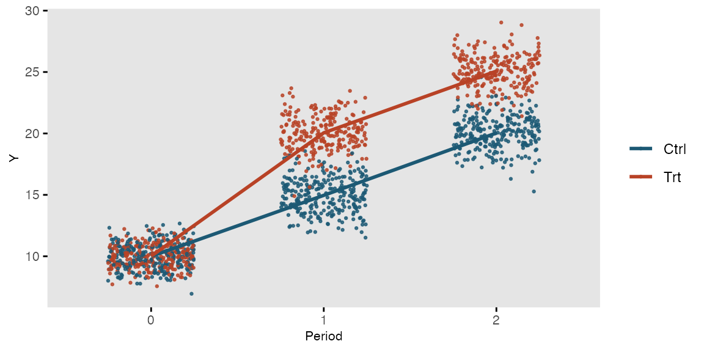
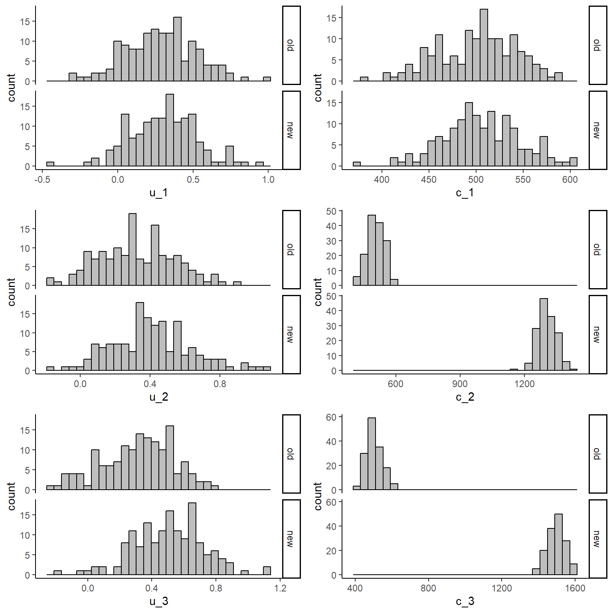

![]()
set.seed(768)
n <- 300
id <- seq(1:n)
trt <- c(rep(0, n/2),rep(1, n/2))
library(mvtnorm)
mean_ut0 <- c(0.3,0.3,0.3)
mean_ut1 <- c(0.3,0.4,0.5)
sigma_u <- diag(3)
diag(sigma_u) <- 0.05
u_t0 <- rmvnorm(n/2,mean = mean_ut0, sigma = sigma_u)
u_t1 <- rmvnorm(n/2,mean = mean_ut1, sigma = sigma_u)
mean_ct0 <- c(500,500,500)
mean_ct1 <- c(500,1300,1500)
sigma_c <- diag(3)
diag(sigma_c) <- 2000
c_t0 <- rmvnorm(n/2,mean = mean_ct0, sigma = sigma_c)
c_t1 <- rmvnorm(n/2,mean = mean_ct1, sigma = sigma_c)
u_1 <- c(u_t0[,1],u_t1[,1])
c_1 <- c(c_t0[,1],c_t1[,1])
u_2 <- c(u_t0[,2],u_t1[,2])
c_2 <- c(c_t0[,2],c_t1[,2])
u_3 <- c(u_t0[,3],u_t1[,3])
c_3 <- c(c_t0[,3],c_t1[,3])
data_sim_uc <- data.frame(id, trt, u_1, c_1, u_2, c_2, u_3, c_3)
data_sim_uc <- data_sim_uc[sample(1:nrow(data_sim_uc)), ]How to handle longitudinal data in economic evaluations
Quarto
R
Academia
health economics

Hello and welcome back for a new update on my blog. Today we go through another “practical” post where I provide some suggestions and examples on how to fit health economic evaluations and learn how to us the appropriate statistical methods to get the results you want. Last post we had a look at how bootstrapping could be implemented for analysing aggregated health economics outcome data (i.e. QALYs and Total costs) collected and computed using data from a trial. Now, we take a step back as calculation of such aggregated outcomes is typically done on the basis of some longitudinal data that were collected during the duration of the trial at different time points. For example, it is common that QALYs are compute using an Area Under the Curve approach as a weighted function of quality of life utility scores:
\[ \text{QALY}_{i} = \sum_{j=1}^J \frac{(u_{ij-1}+u_{ij})}{2}\delta_j , \]
where \(u_{ij}\) is the utility score evaluated for the \(i\)-th patient at the \(j\)-th time point in the trial (with \(J\) being the last time), while \(\delta_j\) is the fraction of total time period (usually 1 year) between two consecutive collected measurements (e.g. if 6 months, then \(\delta_j=0.5\)). The individual utility scores \(u_{ij}\) are obtained after applying some national tariff system values to patients’ answers to some validated questionnaires, e.g. EQ-5D-5L. For each individual, utility scores are calculated based on their answers to the questionnaire items at each time point and the tariff system (usually specific to each country) is used to numerically “value” their health states according to some pre-specified and assumed population model.
Similarly, Total costs are computed for each individual as the sum of all corresponding cost components collected at different times during the trial
\[ \text{Total costs}_i=\sum_j^{J}c_{ij}, \]
where \(c_{ij}\) denotes the cost component collected for patient \(i\)-th at the \(j\)-th time in the trial. These components are typically calculated out of resource use data obtained from either self-reported questionnaires administered to the patients, their clinic records, or a combination of these. Resource use data are then combined with national unit prices for each type of healthcare service used to derive the individual costs associated with each cost component (i.e. \(\text{cost}=\text{resource use}\times \text{unit price}\)) for each individual at each time point.
As perhaps you noticed, it is possible to simply ignore the longitudinal nature of the data by first computing the aggregated outcome measures (QALYs and Total costs) and fit the statistical models directly to these quantities to derive the treatment effect of interest, e.g. mean incremental QALYs and Total costs between a new intervention (\(t=1\)) and a control (\(t=0\)) group. This also simplified the modelling task substantially since the complexities associated with the intrinsic dependence between outcome observations collected from the same individuals over time can be ignored (i.e. it is already summarised into the aggregated measures). However, there are situations in which it would be preferable to fit the model using the original longitudinal data collected throughout the trial and use the estimated quantitis from this model to derive the main treatment effects of interest, i.e. mean incremental QALYs and Total costs between treatment groups. See reference paper here.
First, let’s simulate some longitudinal health economics data. For the sake of this exercise I will create a balanced design in which utilities and costs are collected at three equally spaced time points (baseline, 6 and 12 months) on \(n=300\) individuals randomised to two interventions (new and old group) over a period of 1 year.
With the above commands I have generated, separately for each treatment group, utility and cost data at three different time points assuming a multivariate normal distribution assuming independence over time. Although this is a rather strong assumption in real scenarios here I merely focus on the implementation of the models for longitudinal data. In future posts I will provide more realistic examples to show how changing the data structure actually requires an accurate choice of the methods to deal with them to avoid bias or misleading inferences.
We can inspect the generated data using histograms:
library(ggplot2)
data_sim_uc$trtf <- factor(data_sim_uc$trt)
levels(data_sim_uc$trtf) <- c("old","new")
u1_hist <- ggplot(data_sim_uc, aes(x=u_1))+
geom_histogram(color="black", fill="grey")+
facet_grid(trtf ~ .) + theme_classic()
u2_hist <- ggplot(data_sim_uc, aes(x=u_2))+
geom_histogram(color="black", fill="grey")+
facet_grid(trtf ~ .) + theme_classic()
u3_hist <- ggplot(data_sim_uc, aes(x=u_3))+
geom_histogram(color="black", fill="grey")+
facet_grid(trtf ~ .) + theme_classic()
c1_hist <- ggplot(data_sim_uc, aes(x=c_1))+
geom_histogram(color="black", fill="grey")+
facet_grid(trtf ~ .) + theme_classic()
c2_hist <- ggplot(data_sim_uc, aes(x=c_2))+
geom_histogram(color="black", fill="grey")+
facet_grid(trtf ~ .) + theme_classic()
c3_hist <- ggplot(data_sim_uc, aes(x=c_3))+
geom_histogram(color="black", fill="grey")+
facet_grid(trtf ~ .) + theme_classic()
gridExtra::grid.arrange(u1_hist, c1_hist, u2_hist, c2_hist, u3_hist, c3_hist, nrow = 3, ncol = 2)
From the graphs it is apparent that the new intervention is associated with higher costs compared to the old one when focussing on the follow-up period. We can then inspect some summary statistics to have a better idea about these differences:
library(dplyr)
library(knitr)
library(kableExtra)
data_sim_uc_stats <- data_sim_uc[,c("u_1","c_1","u_2","c_2","u_3","c_3","trtf")]
d.summary <- data_sim_uc_stats %>%
group_by(trtf) %>%
summarize(meanu1 = mean(u_1), sdu1 = sd(u_1),
meanc1 = mean(c_1), sdc1 = sd(c_1),
meanu2 = mean(u_2), sdu2 = sd(u_3),
meanc2 = mean(c_2), sdc2 = sd(c_2),
meanu3 = mean(u_3), sdu3 = sd(u_3),
meanc3 = mean(c_3), sdc3 = sd(c_3)
)
kable(d.summary, caption = "Summary statistics", format = "html", digits = 1)| trtf | meanu1 | sdu1 | meanc1 | sdc1 | meanu2 | sdu2 | meanc2 | sdc2 | meanu3 | sdu3 | meanc3 | sdc3 |
|---|---|---|---|---|---|---|---|---|---|---|---|---|
| old | 0.3 | 0.2 | 499.9 | 42.2 | 0.3 | 0.2 | 507.4 | 39.5 | 0.3 | 0.2 | 503.4 | 43.8 |
| new | 0.3 | 0.2 | 505.2 | 41.6 | 0.4 | 0.2 | 1304.9 | 43.8 | 0.5 | 0.2 | 1498.0 | 47.4 |
We can see that both groups have similar sd while the means show some noticeable differences with \(t=1\) being associated with both higher utility and cost post-baseline values (\(j>1\)). How do we proceed from here? Normally the approach consists in computing QALYs and Total costs and fit models to these data (see previous post). However, it is also possible to fit models directly to the utility and cost data in the form of linear mixed or random-effects regression models. The main idea behind this models is to treat individuals as random effects so that the observations collected at each time can be assigned a two-level multilevel structure in which individuals are nested within time points. In this way dependence between observations for the same individual is taken into account by means of random effects specification, thus preserving the dependence relationships present in the longitudinal data.
Before fitting the model it is necessary to re-arrange out current dataset (wide-format) into a longitudinal format where the utility and cost outcome variables consists in single vectors each of length \(n \times J\) and for each outcome value create an indicator variable associated with the different time at which each value refers to (i.e. taking value 1, 2 or 3). This can be achieved as follows:
library(reshape)
data_long_uc<-reshape(data_sim_uc, varying = c("u_1","u_2","u_3","c_1","c_2","c_3"),
direction = "long",idvar = "id",sep = "_")
data_long_uc$time_2<-ifelse(data_long_uc$time == 2,1,0)
data_long_uc$time_3<-ifelse(data_long_uc$time == 3,1,0)
data_long_uc$trt_time_2<-data_long_uc$trt*data_long_uc$time_2
data_long_uc$trt_time_3<-data_long_uc$trt*data_long_uc$time_3
data_long_uc$timef <- factor(data_long_uc$time)In the code above, in addition to the creation of the variable time, additional indicator variables have been created to denote each individual time point (time_2,time_3) and interaction between time point and treatment assignment (trt_time_2,trt_time_3). Although not necessary, these additional indicators can simply the interpretation of the model specification in terms of retrieving estimates for the main effects of interest, e.g. mean utility and cost at each time point by treatment group. After converting our dataset into long format we can now fit the longitudinal random effects model for the two outcomes separately.
\[ u_{ij} = \alpha_1\times\text{time}_j + \alpha_2 \times \text{trt}\times\text{time}_2 + \alpha_3 \times \text{trt}\times\text{time}_3 + \omega^u_i + \varepsilon^u_{ij}, \]
\[ c_{ij} = \beta_1\times\text{time}_j + \beta_2 \times \text{trt}\times\text{time}_2 + \beta_3 \times \text{trt}\times\text{time}_3 + \omega^c_{i} + \varepsilon^c_{ij}, \]
where the set of regression coefficients \(\boldsymbol \alpha\) and \(\boldsymbol \beta\) capture the association between each predictor included into the model and the outcome, while the terms \(\omega_i\) and \(\varepsilon_{ij}\) denote the random effects and residual error term of the model, respectively. Key aspects to highlight from the model specifications are:
The models do not include a fixed constant as removal of the intercept term allows to interpret the regression parameters and linear combination thereof as functions of the mean utility and cost for each treatment group and time point. For example, when considering time = 1 (baseline), it is clear how the first regression coefficient (\(\alpha_1\) or \(\beta_1\)) represents the mean outcome in the old group at that time point (i.e. setting time=1 and trt=0 gets rid of all other terms into the models).
Different assumptions about the covariance structure of the data can be encoded into the model by specifying a given structure for the error terms. Here, for simplicity, we focus on the simplest case where the error terms are associated with a constant variance of \(\sigma^2_{\varepsilon}\). More sophisticated assumptions can be incorporated by assuming for example a compound symmetry, autocorrelation or fully unstructured covariance matrix for the error terms.
Finally, we note that here the models are fitted assuming independence between utilities and costs to make easier to interpret the results from each model, while in reality correlation between outcomes should be taken into account even at the modelling stage. The model can be fitted in R using different packages and functions. Here we use the nlme package.
library(nlme)
LMM_u <- lme(u ~ -1 + timef + trt_time_2 + trt_time_3, random = ~ 1 | id, data = data_long_uc, method = "ML")
LMM_c <- lme(c ~ -1 + timef + trt_time_2 + trt_time_3, random = ~ 1 | id, data = data_long_uc, method = "ML")We can look at summary results for the fixed effects components of the model (i.e. regression parameters) by typing:
library(nlme)
summary(LMM_u)Linear mixed-effects model fit by maximum likelihood
Data: data_long_uc
AIC BIC logLik
-139.812 -106.1953 76.90602
Random effects:
Formula: ~1 | id
(Intercept) Residual
StdDev: 3.737738e-05 0.2221528
Fixed effects: u ~ -1 + timef + trt_time_2 + trt_time_3
Value Std.Error DF t-value p-value
timef1 0.2952213 0.01286178 596 22.953386 0.0000
timef2 0.3275948 0.01818930 596 18.010304 0.0000
timef3 0.3122918 0.01818930 596 17.168985 0.0000
trt_time_2 0.0822815 0.02572355 596 3.198682 0.0015
trt_time_3 0.1931791 0.02572355 596 7.509813 0.0000
Correlation:
timef1 timef2 timef3 trt__2
timef2 0.000
timef3 0.000 0.000
trt_time_2 0.000 -0.707 0.000
trt_time_3 0.000 0.000 -0.707 0.000
Standardized Within-Group Residuals:
Min Q1 Med Q3 Max
-3.331350319 -0.695732577 0.008706237 0.671322522 3.136293527
Number of Observations: 900
Number of Groups: 300 intervals(LMM_u, level = 0.95, which = "fixed")Approximate 95% confidence intervals
Fixed effects:
lower est. upper
timef1 0.27003168 0.29522134 0.3204110
timef2 0.29197127 0.32759482 0.3632184
timef3 0.27666827 0.31229182 0.3479154
trt_time_2 0.03190217 0.08228147 0.1326608
trt_time_3 0.14279979 0.19317910 0.2435584summary(LMM_c)Linear mixed-effects model fit by maximum likelihood
Data: data_long_uc
AIC BIC logLik
9338.145 9371.761 -4662.072
Random effects:
Formula: ~1 | id
(Intercept) Residual
StdDev: 0.01878518 42.99749
Fixed effects: c ~ -1 + timef + trt_time_2 + trt_time_3
Value Std.Error DF t-value p-value
timef1 502.5422 2.489386 596 201.8740 0
timef2 507.4234 3.520524 596 144.1329 0
timef3 503.3765 3.520524 596 142.9834 0
trt_time_2 797.4610 4.978772 596 160.1722 0
trt_time_3 994.5890 4.978772 596 199.7659 0
Correlation:
timef1 timef2 timef3 trt__2
timef2 0.000
timef3 0.000 0.000
trt_time_2 0.000 -0.707 0.000
trt_time_3 0.000 0.000 -0.707 0.000
Standardized Within-Group Residuals:
Min Q1 Med Q3 Max
-3.34872571 -0.70290153 -0.03622616 0.70767638 2.95503948
Number of Observations: 900
Number of Groups: 300 intervals(LMM_c, level = 0.95, which = "fixed")Approximate 95% confidence intervals
Fixed effects:
lower est. upper
timef1 497.6668 502.5422 507.4177
timef2 500.5285 507.4234 514.3183
timef3 496.4816 503.3765 510.2714
trt_time_2 787.7102 797.4610 807.2119
trt_time_3 984.8381 994.5890 1004.3399and we can derive the marginal mean estimates (and corresponding CIs) for the utility and cost at each time point by treatment group using the emmeans function included in the emmeans package:
library(emmeans)
mu_u <- emmeans(LMM_u, ~ -1 + timef + trt_time_2 + trt_time_3)
mu_u timef trt_time_2 trt_time_3 emmean SE df lower.CL upper.CL
1 0 0 0.295 0.0129 596 0.270 0.320
2 0 0 0.328 0.0182 596 0.292 0.363
3 0 0 0.312 0.0182 596 0.277 0.348
1 1 0 0.378 0.0288 596 0.321 0.434
2 1 0 0.410 0.0182 596 0.374 0.446
3 1 0 0.395 0.0315 596 0.333 0.456
1 0 1 0.488 0.0288 596 0.432 0.545
2 0 1 0.521 0.0315 596 0.459 0.583
3 0 1 0.505 0.0182 596 0.470 0.541
1 1 1 0.571 0.0386 596 0.495 0.646
2 1 1 0.603 0.0315 596 0.541 0.665
3 1 1 0.588 0.0315 596 0.526 0.650
Degrees-of-freedom method: containment
Confidence level used: 0.95 mu_c <- emmeans(LMM_c, ~ -1 + timef + trt_time_2 + trt_time_3)
mu_c timef trt_time_2 trt_time_3 emmean SE df lower.CL upper.CL
1 0 0 502.5 2.489 596 497.7 507.4
2 0 0 507.4 3.521 596 500.5 514.3
3 0 0 503.4 3.521 596 496.5 510.3
1 1 0 1300.0 5.566 596 1289.1 1310.9
2 1 0 1304.9 3.521 596 1298.0 1311.8
3 1 0 1300.8 6.098 596 1288.9 1312.8
1 0 1 1497.1 5.566 596 1486.2 1508.1
2 0 1 1502.0 6.098 596 1490.0 1514.0
3 0 1 1498.0 3.521 596 1491.1 1504.9
1 1 1 2294.6 7.468 596 2279.9 2309.3
2 1 1 2299.5 6.098 596 2287.5 2311.4
3 1 1 2295.4 6.098 596 2283.5 2307.4
Degrees-of-freedom method: containment
Confidence level used: 0.95 Finally, we can compute a linear combination of these marginal mean estimates in order to derive the main effects of interest for the analysis, that is the mean QALYs and Total cost estimates evaluated over the whole trial period. Indeed, it suffices to apply the usual formulae used for computing the aggregated quantities to the mean estimates instead, so to derive the corresponding mean estimates for such quantities by group. We can do this as follows:
mu_QALYs <- contrast(mu_u, list(mu_e_old = c(0.25,0.25+0.25,0.25,0,0,0,0,0,0,0,0,0),
mu_e_new = c(0.25,0,0,0,0.25+0.25,0,0,0,0.25,0,0,0)))
mu_QALYs contrast estimate SE df t.ratio p.value
mu_e_old 0.316 0.0107 596 29.601 <.0001
mu_e_new 0.405 0.0107 596 37.987 <.0001
Degrees-of-freedom method: containment confint(mu_QALYs) contrast estimate SE df lower.CL upper.CL
mu_e_old 0.316 0.0107 596 0.295 0.337
mu_e_new 0.405 0.0107 596 0.384 0.426
Degrees-of-freedom method: containment
Confidence level used: 0.95 mu_Totalcosts <- contrast(mu_c, list(mu_tc_old = c(0,1,1,0,0,0,0,0,0,0,0,0),
mu_tc_new = c(0,0,0,0,1,0,0,0,1,0,0,0)))
mu_Totalcosts contrast estimate SE df t.ratio p.value
mu_tc_old 1011 4.979 596 203.022 <.0001
mu_tc_new 2803 4.979 596 562.960 <.0001
Degrees-of-freedom method: containment confint(mu_Totalcosts) contrast estimate SE df lower.CL upper.CL
mu_tc_old 1011 4.979 596 1001 1021
mu_tc_new 2803 4.979 596 2793 2813
Degrees-of-freedom method: containment
Confidence level used: 0.95 and, in a similar way, we can also compute the incremental means between treatment groups by taking a linear combination of these estimates:
delta_QALYs <- contrast(mu_u, list(QALYs = c(0,-0.25-0.25,-0.25,0,0.25+0.25,0,0,0,0.25,0,0,0)))
delta_QALYs contrast estimate SE df t.ratio p.value
QALYs 0.0894 0.0144 596 6.219 <.0001
Degrees-of-freedom method: containment confint(delta_QALYs) contrast estimate SE df lower.CL upper.CL
QALYs 0.0894 0.0144 596 0.0612 0.118
Degrees-of-freedom method: containment
Confidence level used: 0.95 delta_Totalcosts <- contrast(mu_c, list(TCs = c(0,-1,-1,0,1,0,0,0,1,0,0,0)))
delta_Totalcosts contrast estimate SE df t.ratio p.value
TCs 1792 7.04 596 254.515 <.0001
Degrees-of-freedom method: containment confint(delta_Totalcosts) contrast estimate SE df lower.CL upper.CL
TCs 1792 7.04 596 1778 1806
Degrees-of-freedom method: containment
Confidence level used: 0.95 After fitting the model and having retrieved these estimates, it is possible apply bootstrap methods to resample the estimates over a large number of bootstrap samples so to quantify the uncertainty surrounding these estimates and obtain different replications that can be plotted to produce standard graphical tools such as the cost-effectiveness plane and acceptability curve to assess cost-effectiveness. We refer to the previous post to see how the code looks like for implementing bootstrapping. I will show examples on how to use bootstrap methods in combination with mixed models in future posts.
Satisfied? well perhaps you are asking yourself: why do I need to bother with this stuff if I can simply compute my aggregated variables and fit simpler models to those instead of complicating my life with longitudinal models? Well you are certainly right that in theory there is no practical advantage of using these models over cross-sectional models fitted at the level of QALYs and Total costs. However, in practice there is always a problem with some people dropping out from the study and thus being unable to observe all utility and cost data that were intended to be measured at each time point. As I will show in future posts, this poses a huge threat to the reliability of the estimates based on the available data (e.g. if only people with worse conditions drop out) which may lead in turn to misleading cost-effectiveness conclusions. Well, it turns out that by fitting models at the original level at which data were collected, i.e. longitudinally, you avoid getting rid of precious information from the data and use it in order to make your results more robust to less restrictive missing data assumptions.
This is a huge topic for which I will not start a new discussion right now. However, it is enough to say that if you simply ignore the unobserved cases you may come up with completely wrong answers that are based on very specific and often unrealistic assumptions about these unobserved data!!!